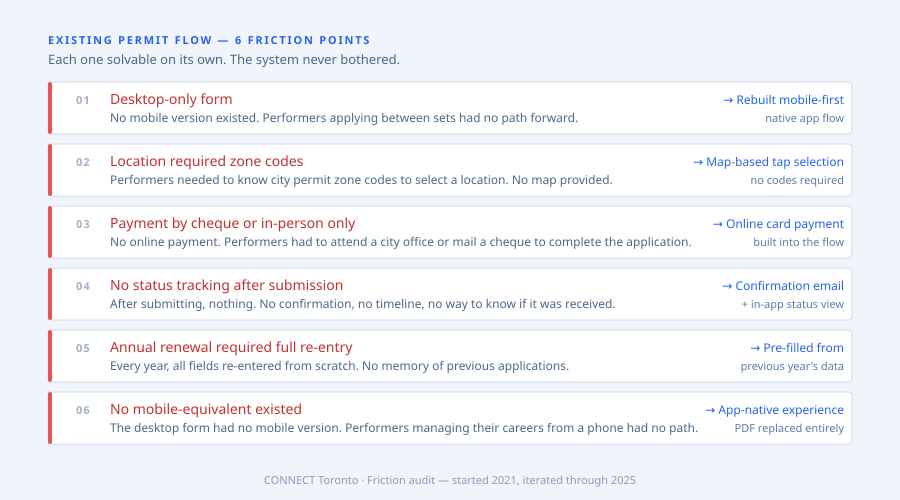
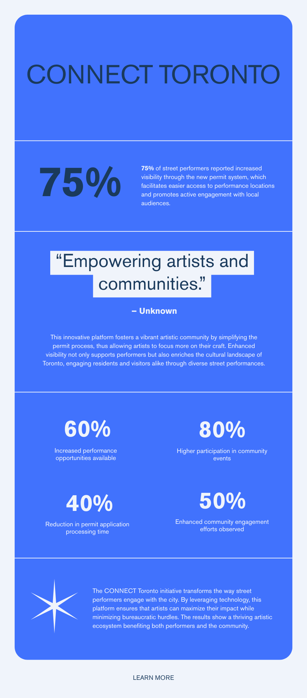
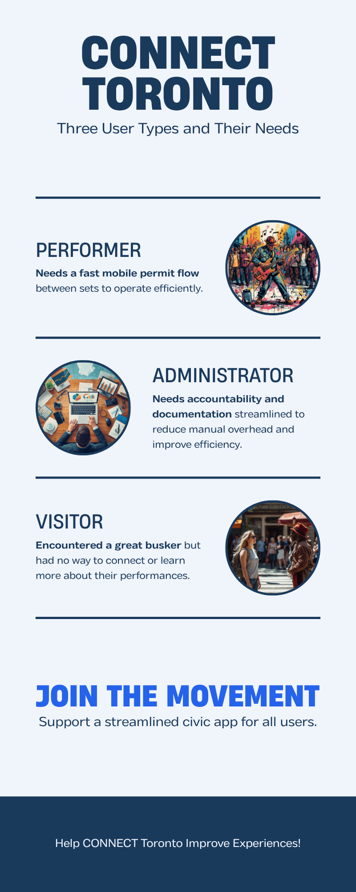
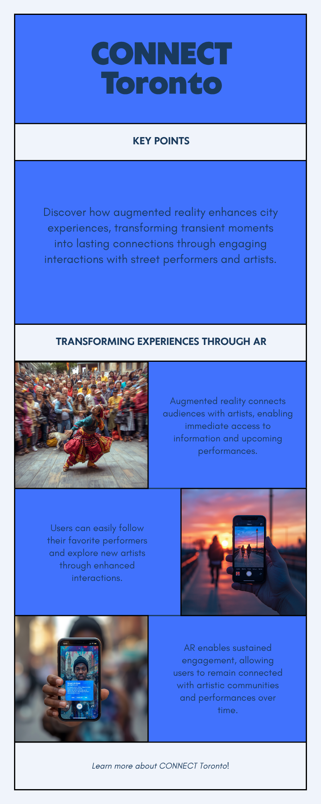
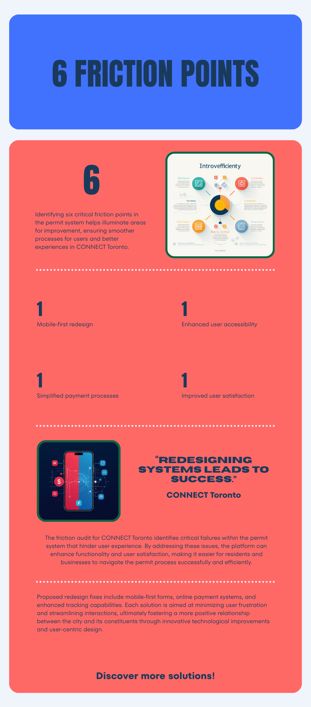
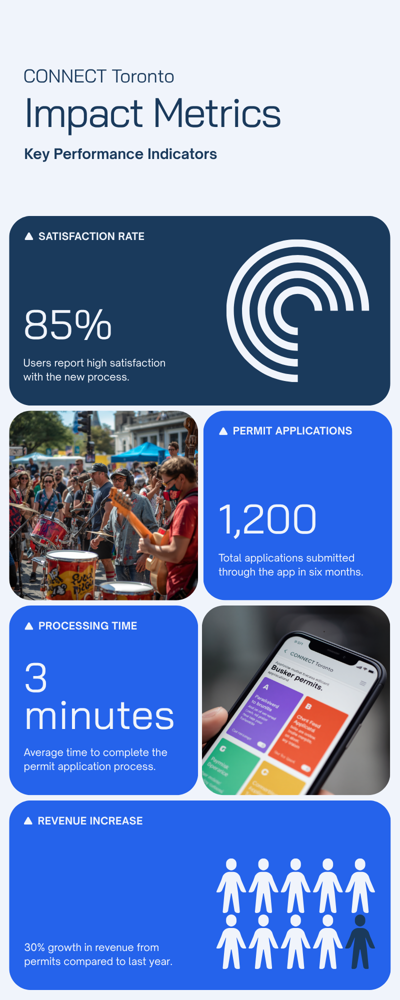

Context
It started with housing. It became something more specific — and more interesting.
In my final semester, the brief was to identify and pitch a solution to Toronto's housing crisis. The question underneath that brief — who gets to participate in city life, and what infrastructure exists to support them — led me somewhere unexpected: street performers.
Buskers are one of the most visible expressions of urban culture in Toronto, performing at Yonge-Dundas Square, the PATH, TTC platforms. But the system they navigate to do that legally is paper-heavy, slow, and designed without them in mind. It felt like a specific, solvable version of a much larger problem: cities that claim to value culture but make it difficult to actually practice it.
I pitched CONNECT Toronto as that solution — and kept building it after the semester ended. What started as a permit redesign has been iterated and expanded every year since 2021, growing in fidelity and scope. The AR layer came later, as an answer to a second question: what if the person watching a busker could actually follow that artist beyond that moment?
The Problem
Three users. None of them well served by the existing system.
Performers needed a fast permit flow they could manage from their phone between sets. City administrators needed a system that reduced their processing overhead without losing accountability or documentation. Visitors and residents encountering a performer had no way to connect, follow, or even know who they were watching.
Journey mapping the existing permit process revealed six distinct friction points — from initial registration through to renewal. Each one was a place where the system asked for more than was necessary or gave less than what was needed.

The friction wasn't one big problem. It was six small ones compounding at every step — each solvable on its own, each invisible to whoever designed the original system.
Approach
A 4-step mobile flow for performers. An AR discovery layer for everyone else.
The permit application was redesigned as a guided mobile flow: registration, location selection, schedule, and payment. Each step was stripped to its minimum viable ask — no fields that didn't serve the performer or the administration, no ambiguity about what was required next.
The AR prototype is the more experimental piece. Built as a proof of concept, it lets visitors point their camera at a performing busker to surface their profile, upcoming locations, and links to their music. It turns a transient moment — you happen to hear someone great — into a persistent connection.
Left: Toronto street grid with pinned performance zones and an AR coverage overlay. Right: the permit flow — a 4-step mobile form replacing a multi-page paper process, with location selection and schedule built into the flow rather than bolted on separately.
Design System
Light civic palette. Blue signal. Clarity for a city that moves fast.
The brand language is built around civic trust and mobile legibility — light backgrounds, sharp navy type, and blue for every interactive element. The system needed to feel institutional without feeling bureaucratic: credible enough that a performer would trust it with a legal permit, simple enough to complete between sets.

Portfolio thumbnail / hero — Toronto street grid with AR coverage zones on left, 4-step permit flow app on right.

Three users — Performer, Administrator, Visitor — each with a distinct need the existing system failed to address.

AR discovery concept — phone camera pointed at a busker surfaces their profile, upcoming locations, and music links. A transient moment becomes a persistent connection.

Friction audit — 6 permit system failures, each mapped to its redesign fix. Desktop-only → mobile-first. Zone codes → map tap. Cheque → online payment.

4-step permit flow — Registration, Location, Schedule, Payment. Ordered the way a performer actually thinks, not the way city admin layered requirements.
The Process
Three user interviews. Six friction points. One principle: don't ask for what you don't need.
Research involved direct conversations with Toronto buskers about the existing permit experience. The recurring theme wasn't one broken step — it was a sequence of steps each slightly worse than necessary. Journey mapping the process surfaced six distinct friction points, each independently fixable, each invisible to whoever designed the original system.
The 4-step flow was designed around field order logic: who you are (registration), where you'll perform (map-based zone selection), when (date/schedule), and how you'll pay (online). That's the sequence a performer thinks in. The original process wasn't ordered that way. Admin requirements had been layered on top without restructuring the experience around the user.
The AR prototype was built in Figma as a high-fidelity interactive concept. The near-term realistic version: performers carry a QR code on their issued permit. Visitors scan it with their phone camera and get a profile — artist name, upcoming performance dates, links to music. The longer-term version — point your camera at a person and have the app recognise them — requires computer vision infrastructure a city permit system realistically won't have for years. The Figma prototype demonstrates both: the QR flow as the viable path, the camera recognition as the directional vision.
The hardest constraint was scoping. The AR concept generated genuine excitement but risked swallowing the permit redesign, which was the actual brief. Keeping them as distinct layers — one solves an admin problem, one solves a cultural discovery problem — was the framing that let both do their job clearly.
Outcome
A permit flow that respects the performer's time. An AR concept that earned real stakeholder interest.
The redesigned permit flow is meaningfully shorter than the existing process — fewer steps, fewer fields, no physical attendance required. The AR prototype was validated with both performers and city stakeholders as a credible future direction, not an immediate implementation.
Reflection
The AR concept is the most interesting part of this project and I undersold it in early presentations. It reframes the busker not just as someone with a permit but as an artist with a discoverable identity — that's a fundamentally different relationship between performer and city. I'd push that angle harder if I were doing this again, and prototype the AR interaction in higher fidelity earlier.